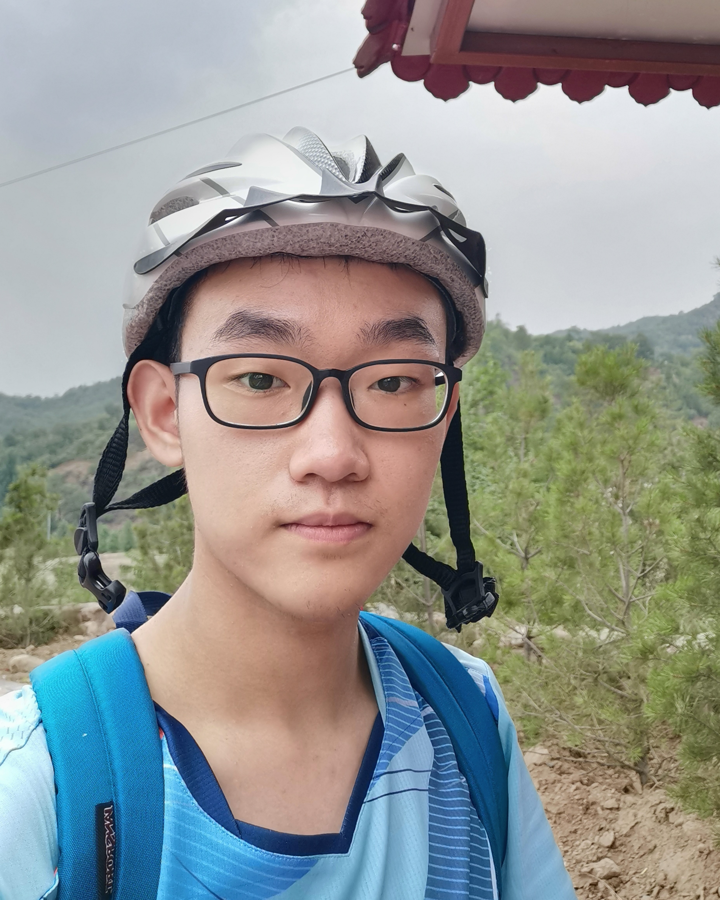

|  | B.S Student |
Currently I am an undergraduate student in the School of Electronic Engineering and Computer Science, Peking University.
I major in computer science, and minor in mathematics.
My research interests are situated in quantum information. I love problems which can provide insights in quantum information and help us to understand the structure of entanglement and unentanglement. Based on such interests, I am curious about quantum cryptography and quantum complexity theory. I think the quantum information is not an isolated field. It can gain insights from in many scientific fields. It can also inspire other researchers in such fields. So I am also interested in the interplay and connection with theoretical physics and math (such as the algebraic and topological structure).
Quantum Algorithms For Supersingular Isogeny Problems. [pdf] advised by Tongyang Li.
We made some attempts to improve existing algorithms for the supersingular isogeny problem using techniques in quantum walk, but failed due to the special structure of the problem. I wrote a survey about this problem, pointed out the hardness of the problem and explained why we failed.
Quantum Fourier Transform on Local Fields of Zero Charateristic. [pdf] advised by Tongyang Li.
Compression Theorem of Nonlocal Games. advised by Zhengfeng Ji.
I am going to hold a seminar on physics and computation, discussing the connection between them, going beyond the fundemantal connection established by quantum computing.
A talk on the Seminar on Quantum Algorithms, held by Zhengfeng Ji, 2023 Spring.